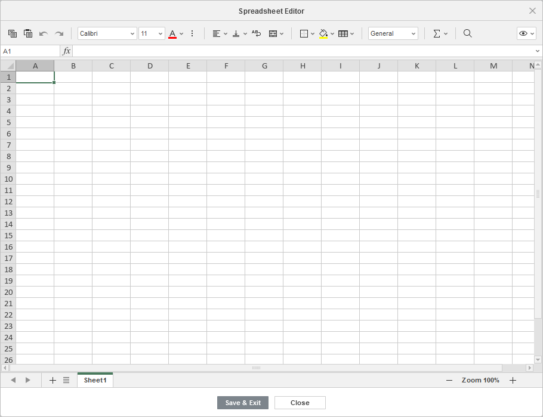
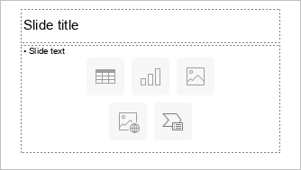
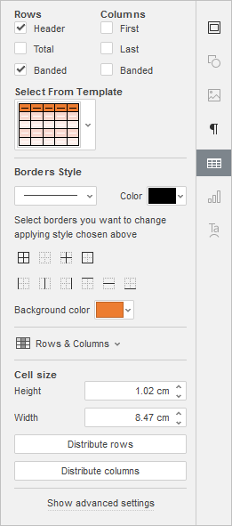
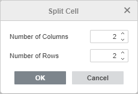
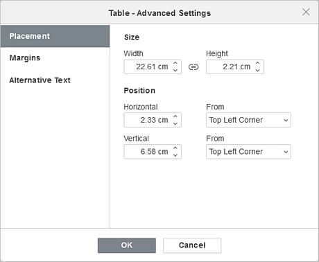
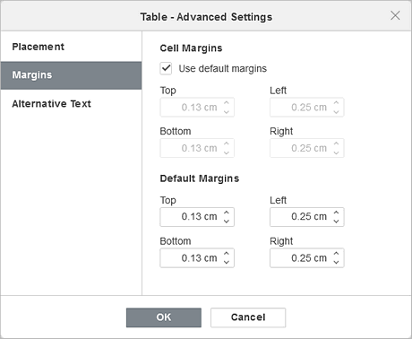
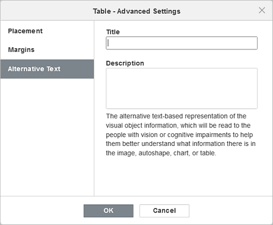

Umetnite i formatirajte tabele
Umetnite tabelu
Da biste umetnuli tabelu u slajd u Presentation Editor-u,
- izaberite slajd na koji treba dodati tabelu,
- prebacite se na tab Insert na gornjoj alatnoj traci,
- kliknite na ikonicu Table na gornjoj alatnoj traci,
-
izaberite jednu od sledećih opcija za kreiranje tabele:
-
bilo tabelu sa unapred definisanim brojem ćelija (maksimalno 10 x 8 ćelija)
Ako želite brzo da dodate tabelu, samo izaberite broj redova (maksimalno 8) i kolona (maksimalno 10).
-
ili prilagođenu tabelu
Ako vam je potrebno više od 10 x 8 ćelija, izaberite opciju Insert Custom Table koja će otvoriti prozor u kojem možete uneti potreban broj redova i kolona, a zatim kliknite na dugme OK.
-
-
ako želite da umetnete tabelu kao OLE objekat:
- Izaberite opciju Insert Spreadsheet u meniju Table na tabu Insert.
-
Pojaviće se odgovarajući prozor u kojem možete uneti potrebne podatke i formatirati ih koristeći alate za formatiranje Spreadsheet Editor-a, kao što su izbor fonta, tipa i stila, podešavanje formata brojeva, umetanje funkcija, formatiranje tabela itd.

- Zaglavlje sadrži dugme Visible area u gornjem desnom uglu prozora. Izaberite opciju Edit Visible Area da biste odabrali oblast koja će biti prikazana kada se objekat umetne u prezentaciju; ostali podaci se ne gube, već su samo sakriveni. Kliknite Done kada završite.
- Kliknite na dugme Show Visible Area da biste videli izabranu oblast koja će imati plavi okvir.
- Kada završite, kliknite na dugme Save & Exit.
- kada se tabela doda, možete promeniti njena svojstva i položaj.
Tabelu možete dodati i u držač teksta pritiskom na ikonicu Table u okviru njega i izborom potrebnog broja ćelija ili korišćenjem opcije Insert Custom Table:

Da biste promenili veličinu tabele, prevucite ručice koje se nalaze na njenim ivicama dok tabela ne dostigne željenu veličinu.
Takođe možete ručno promeniti širinu određene kolone ili visinu reda. Postavite kursor miša iznad desne ivice kolone tako da kursor postane dvosmerna strelica i prevucite ivicu ulevo ili udesno da biste podesili željenu širinu. Da biste ručno promenili visinu jednog reda, postavite kursor miša iznad donje ivice reda dok kursor ne postane dvosmerna strelica i prevucite ivicu nagore ili nadole.
Možete odrediti položaj tabele na slajdu prevlačenjem vertikalno ili horizontalno.
Napomena: za kretanje unutar tabele možete koristiti prečice na tastaturi.
Takođe je moguće dodati tabelu u raspored slajda. Da biste saznali više, pogledajte ovaj članak.
Podesite podešavanja tabele

Većina svojstava tabele, kao i njena struktura, mogu se menjati korišćenjem desne bočne trake. Da biste je aktivirali, kliknite na tabelu i izaberite ikonicu Table settings sa desne strane.
Odeljci Rows i Columns na vrhu omogućavaju da naglasite određene redove/kolone primenom posebnog formatiranja ili da istaknete različite redove/kolone različitim bojama pozadine kako bi se jasnije razlikovali. Dostupne su sledeće opcije:
- Header - naglašava gornji red u tabeli posebnim formatiranjem.
- Total - naglašava donji red u tabeli posebnim formatiranjem.
- Banded - omogućava naizmenično menjanje boje pozadine za neparne i parne redove.
- First - naglašava krajnju levu kolonu u tabeli posebnim formatiranjem.
- Last - naglašava krajnju desnu kolonu u tabeli posebnim formatiranjem.
- Banded - omogućava naizmenično menjanje boje pozadine za neparne i parne kolone.
Odeljak Select From Template omogućava izbor jednog od unapred definisanih stilova tabela. Svaki šablon kombinuje određene parametre formatiranja, kao što su boja pozadine, stil ivica, naizmenično bojenje redova/kolona itd. U zavisnosti od opcija označenih u odeljcima Rows i/ili Columns iznad, skup prikazanih šablona će se razlikovati. Na primer, ako ste označili opciju Header u odeljku Rows i opciju Banded u odeljku Columns, prikazana lista šablona će uključivati samo šablone sa uključenim zaglavljem i naizmeničnim kolonama:
Odeljak Borders Style omogućava da promenite primenjeno formatiranje koje odgovara izabranom šablonu. Možete izabrati celu tabelu ili određeni opseg ćelija i ručno podesiti sve parametre.
-
Parametri Border - podesite debljinu ivice koristeći listu (ili izaberite opciju No borders), odaberite Color iz dostupnih paleta i odredite način prikaza u ćelijama klikom na ikonice:
- Background color - izaberite boju pozadine unutar izabranih ćelija.
Odeljak Rows & Columns omogućava sledeće operacije:
- Select red, kolonu, ćeliju (u zavisnosti od pozicije kursora) ili celu tabelu.
- Insert novi red iznad ili ispod izabranog, kao i novu kolonu levo ili desno od izabrane.
- Delete red, kolonu (u zavisnosti od pozicije kursora ili izbora) ili celu tabelu.
- Merge Cells - spaja prethodno izabrane ćelije u jednu.
-
Split Cell... - deli prethodno izabranu ćeliju na određeni broj redova i kolona. Ova opcija otvara sledeći prozor:

Unesite Number of Columns i Number of Rows na koje treba podeliti izabranu ćeliju i pritisnite OK.
Napomena: opcije iz odeljka Rows & Columns dostupne su i iz menija desnog klika.
Odeljak Cell Size koristi se za podešavanje širine i visine trenutno izabrane ćelije. U ovom odeljku takođe možete Distribute rows tako da sve izabrane ćelije imaju jednaku visinu ili Distribute columns tako da sve izabrane ćelije imaju jednaku širinu. Opcije Distribute rows/columns dostupne su i iz menija desnog klika.
Podesite napredna podešavanja tabele
Da biste promenili napredna podešavanja tabele, kliknite desnim tasterom miša na tabelu i izaberite opciju Table Advanced Settings iz menija desnog klika ili kliknite na vezu Show advanced settings na desnoj bočnoj traci. Otvoriće se prozor sa svojstvima tabele:

Kartica Placement omogućava da podesite sledeća svojstva tabele:
- Size - koristite ovu opciju da promenite širinu i/ili visinu tabele. Ako je dugme Constant proportions uključeno (u tom slučaju izgleda ovako ), širina i visina će se menjati zajedno uz zadržavanje originalnih proporcija.
- Position - podesite tačan položaj koristeći polja Horizontal i Vertical, kao i polje From gde možete pristupiti podešavanjima kao što su Top Left Corner i Center.

Kartica Margins omogućava podešavanje razmaka između teksta u ćelijama i ivice ćelije:
- unesite potrebne vrednosti Cell Margins ručno, ili
- označite polje Use default margins da biste primenili unapred definisane vrednosti (po potrebi se mogu dodatno prilagoditi).

Kartica Alternative Text omogućava navođenje Title i Description koji će se čitati osobama sa oštećenjima vida ili kognitivnim poteškoćama kako bi lakše razumele sadržaj tabele.
Za formatiranje unetog teksta u ćelijama tabele možete koristiti ikonice na tabu Home na gornjoj alatnoj traci. Meni desnog klika, koji se pojavljuje kada kliknete desnim tasterom miša na tabelu, sadrži još dve dodatne opcije:
- Cell vertical alignment - omogućava da podesite željeni tip vertikalnog poravnanja teksta u izabranim ćelijama: Align Top, Align Center ili Align Bottom.
- Hyperlink - omogućava umetanje hiperveze u izabranu ćeliju.